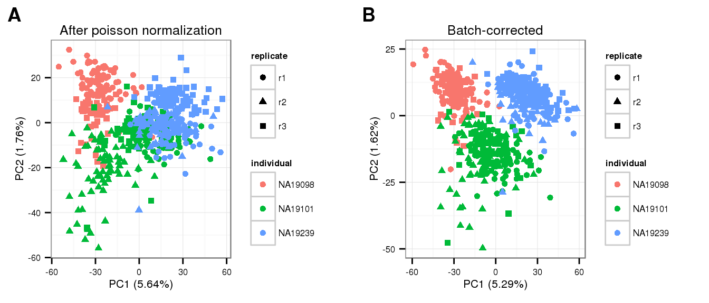

Last updated: 2016-01-15
Code version: ab0cf1f917a4c115e9ee44403eb62e837e1795ae
Update the batch-corrected counts using data that were processed well-specific technical bias in molecule counts using ERCC molecule counts under a Poisson-based framework. See [link1] for details.
source("functions.R")
require("limma")Loading required package: limmarequire("edgeR")Loading required package: edgeRrequire(ggplot2)Loading required package: ggplot2require(dplyr)Loading required package: dplyr
Attaching package: 'dplyr'
The following objects are masked from 'package:stats':
filter, lag
The following objects are masked from 'package:base':
intersect, setdiff, setequal, unionrequire(data.table)Loading required package: data.table
Attaching package: 'data.table'
The following objects are masked from 'package:dplyr':
between, lasttheme_set(theme_bw(base_size = 12))Import data: ERCC counts after filtering out low quality single cells are used to compute well-specific bias in ENSG molecule counts.
# Annotation for single cells included in downstream analysis
anno <- read.table("../data/annotation.txt",header=T,stringsAsFactors=F)
quality_single_cells <- scan("../data/quality-single-cells.txt",
what = "character")
anno_filter <- anno %>% filter(sample_id %in% quality_single_cells)
# Import expected ERCC counts
spike <- read.table("../data/expected-ercc-molecules.txt", header = TRUE,
sep = "\t", stringsAsFactors = FALSE)
# Import molecule counts of all genes (ERCC + ENSG) after filtering out low
# quality single cells
molecules_filter <- read.table("../data/molecules-filter.txt", header = TRUE,
stringsAsFactors = FALSE)
# ERCC observed count
spike_input <- spike$ercc_molecules_well[spike$id %in% rownames(molecules_filter)]
names(spike_input) <- spike$id[spike$id %in% rownames(molecules_filter)]
spike_input <- spike_input[order(names(spike_input))]
tech <- grepl("ERCC", rownames(molecules_filter))
molecules_filter <- as.matrix(molecules_filter)
batches <- unique(anno_filter$batch)
# CPM corrected ENSG counts
molecules_cpm <- fread( "../data/molecules-cpm.txt", header = TRUE,
stringsAsFactors = FALSE)
setDF(molecules_cpm)
rownames(molecules_cpm) <- molecules_cpm$V1
molecules_cpm$V1 <- NULL
molecules_cpm <- as.matrix(molecules_cpm)Apply poisson regression to compute expected-to-observed count transformation paramters using ERCC count infomration.
pois_glm_params <- lapply(1:3,function(g) numeric(ncol(molecules_cpm)))
names(pois_glm_params) = c("intercept","nu","theta")
for (i in 1:ncol(molecules_cpm)) {
fit <- glm(molecules_filter[names(spike_input), i] ~ log(spike_input), family="poisson")
pois_glm_params$intercept[i] <- fit$coefficients[1]
pois_glm_params$nu[i] <- fit$coefficients[2]
}
pois_glm_expression <- sweep( sweep( molecules_cpm, 2, pois_glm_params$intercept, "-"), 2, pois_glm_params$nu, "/" )PCA
molecules_pois_transform <- run_pca(pois_glm_expression)
molecules_pois_transform_plot <- plot_pca(molecules_pois_transform$PCs,
explained = molecules_pois_transform$explained,
metadata = anno_filter,
color = "individual",
shape = "replicate") +
labs(title = "After poisson normalization")Load the Humanzee package
if (!require(Humanzee, quietly = TRUE)) {
library(devtools)
install_github("jhsiao999/Humanzee")
library(Humanzee)
}Create design matrix and compute a consensus correlation coefficient using limma’s duplicateCorrelation function.
block <- anno_filter$batch
design <- model.matrix(~ 1 + individual, data = anno_filter)Compute correlation between replicates.
dup_corrs_file <- "../data/dup-corrs-poisson.rda"
if (file.exists(dup_corrs_file)) {
load(dup_corrs_file)
} else{
dup_corrs <- duplicateCorrelation(pois_glm_expression,
design = design, block = block)
save(dup_corrs, file = dup_corrs_file)
}
str(dup_corrs)List of 3
$ consensus.correlation: num 0.0469
$ cor : num 0.0469
$ atanh.correlations : num [1:10564] 0.003212 0.136288 0.115906 0.000111 0.012663 ...Fit a mixed model with the 8 batches being the random effect.
if (file.exists("../data/limma-crossed-poisson.rda")) {
load("../data/limma-crossed-poisson.rda")
} else {
gls_fit <- Humanzee::ruv_mixed_model(pois_glm_expression,
ndups = 1,
design = design, block = block,
correlation = dup_corrs$cons)
save(gls_fit, file = "../data/limma-crossed-poisson.rda")
}Compute expression levels after removing variation due to random effects.
molecules_final <- t( design %*% t(gls_fit$coef) ) + gls_fit$resid
colnames(molecules_final) <- anno_filter$sample_id
rownames(molecules_final) <- rownames(molecules_cpm)Export final data
data_file <- "../data/molecules-final-pois.txt"
if (!file.exists(data_file)) {
write.table(molecules_final,
data_file, quote = FALSE, sep = "\t",
row.names = TRUE)
}pca_final <- run_pca(molecules_final)
pca_final_plot <- plot_pca(pca_final$PCs, explained = pca_final$explained,
metadata = anno_filter, color = "individual",
shape = "replicate") +
labs(title = "Batch-corrected")theme_set(theme_bw(base_size = 8))
cowplot::plot_grid(
molecules_pois_transform_plot,
pca_final_plot,
ncol = 2,
labels = LETTERS[1:2])
sessionInfo()R version 3.2.0 (2015-04-16)
Platform: x86_64-unknown-linux-gnu (64-bit)
locale:
[1] LC_CTYPE=en_US.UTF-8 LC_NUMERIC=C
[3] LC_TIME=en_US.UTF-8 LC_COLLATE=en_US.UTF-8
[5] LC_MONETARY=en_US.UTF-8 LC_MESSAGES=en_US.UTF-8
[7] LC_PAPER=en_US.UTF-8 LC_NAME=C
[9] LC_ADDRESS=C LC_TELEPHONE=C
[11] LC_MEASUREMENT=en_US.UTF-8 LC_IDENTIFICATION=C
attached base packages:
[1] stats graphics grDevices utils datasets methods base
other attached packages:
[1] Humanzee_0.1.0 testit_0.4 data.table_1.9.4 dplyr_0.4.2
[5] ggplot2_1.0.1 edgeR_3.10.2 limma_3.24.9 knitr_1.10.5
loaded via a namespace (and not attached):
[1] Rcpp_0.12.0 magrittr_1.5 MASS_7.3-40 cowplot_0.3.1
[5] munsell_0.4.2 colorspace_1.2-6 R6_2.1.1 stringr_1.0.0
[9] httr_0.6.1 plyr_1.8.3 tools_3.2.0 parallel_3.2.0
[13] grid_3.2.0 gtable_0.1.2 DBI_0.3.1 htmltools_0.2.6
[17] lazyeval_0.1.10 assertthat_0.1 yaml_2.1.13 digest_0.6.8
[21] reshape2_1.4.1 formatR_1.2 bitops_1.0-6 RCurl_1.95-4.6
[25] evaluate_0.7 rmarkdown_0.6.1 labeling_0.3 stringi_0.4-1
[29] scales_0.2.4 chron_2.3-45 proto_0.3-10